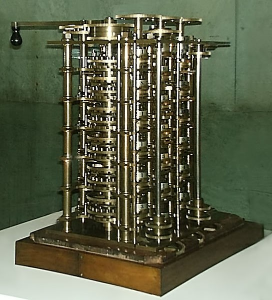
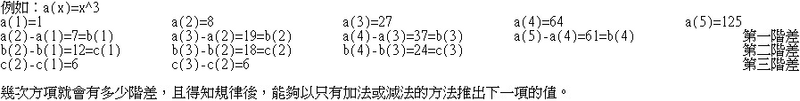
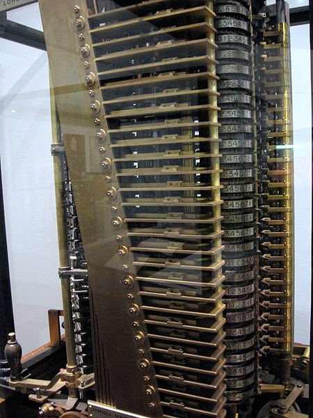
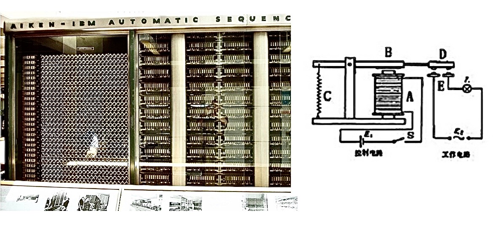
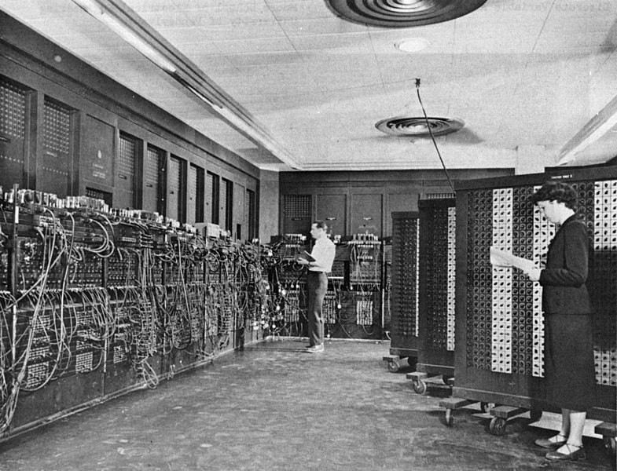
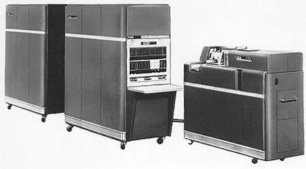
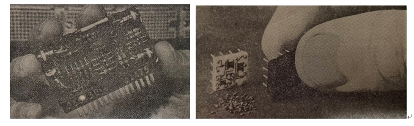

一、本文
圖○1：差分機(只有1/7)
計算機的發展過程
生活中的計算機無所不在，包含手機、電腦、甚至上天或下海的機器，只要具有計算能力，就算是計算機的一種，這讓我們不禁思考，曾幾何時生活充滿了這些東西，以及他們的發展過程、源頭是甚麼？
西元1812年一位數學教授，查爾斯·巴比吉，為了計算三角函數及對數函數所以設計以多項式展開為方法的機器，「差分機」。
圖○2：運算原理
計算機的發展過程
重數公噸，可計算到第六階差。
圖○3：分析機中的計算邏輯單元和控制單元
計算機的發展過程
雖然差分機仍不是一部完善的可規劃(Programmable)機械，但到了1833年，巴比吉又設計了以蒸氣推動的「分析機」，這台機器每秒能夠完成一個加法運算，機器內部包含資料儲存單元，可以儲存以打洞卡片輸入的計算指令和資料，不同的計算步驟都可以輸入後自動執行，這就是這台機械自己的「程式語言」，且分析機是第一部可規劃的計算機械，同時也被認為是圖靈完備的。
註○1：圖靈完備是指機械能夠藉由程式語言和運算規則正常運作的。
圖○4：馬克一號左面部份(左)
圖○5：電磁繼電器(右)

計算機的發展過程
西元1854年，由同樣也是數學家的喬治·布耳發布了非常重要的概念，布耳代數，0和1經由運算(AND、OR)後所產出的值，應用在邏輯中的話，0代表false，1代表true，至今布耳代數依舊是不可或缺的基礎原理。
西元1880年，荷曼·哈雷利斯或稱何禮樂，是美國一位統計學家，同時也是知名公司IBM前身公司CTR的創始人，當時，為了全美戶口普查，他設計出了以打洞卡片輸入資料的人口資料處理器，藉由機械或是光學的讀卡，機器能夠從不同的打洞位置辨認所代表的符號。
西元1937年，畢業於哈佛大學的豪爾德·愛肯設計了一個通用型的計算機械，馬克一號自洞程序控制計算器，簡稱馬克一號，於1944年在IBM公司的協助下製作完成，此機器使用電磁繼電器控制機械的計數器，機器內部有72個累加器(用以存放中間計算結果)，以繼電器的開啟/接合狀態代表資料，外部則有60組開關，可以藉由開關位置的扳動輸入代計算的資料，馬克一號每秒可以完成3個加法或減法運算，同時馬克一號具有重要的歷史意義，它是由「機械」傳動的計算機器演進到「電子」計算機器間的橋樑，它也是世界第一部現代計算機ENIAC最接近的前身。
圖○6：ENIAC
計算機的發展過程
西元1943年，工程學院教授愛克特和物理學家摩其利著手研究一種用來計算複雜飛彈拋射彈道資料的電子裝置，到了1947年，他們製造了世界第一臺「電子」計算機；多數人認為愛克特和摩其利為現代電子計算機的創始者。
ENIAC是一臺十進制計算機，由18000隻真空管組成，且佔地約140平方公尺，重達30噸，計算速度從過去每秒1個、3個加法運算直接提升到每秒5000個加法運算，內部沒有記憶儲存裝置，主要是靠扳動開關及插線端子指揮工作。
圖○7：UNIVAC I主機及控制台

計算機的發展過程
西元1954年，由上述兩位開創的公司所推出的UNIVAC I，裝置在通用電氣公司，是第一部用在商業經營用途的電子計算機，在當時就好像「計算機」的同義詞一樣，一直到後來IBM興起為止。
圖○8：IBM650
計算機的發展過程
西元1953年，推出了IBM701，在隔年年底又推出了IBM650，在那之後五年，IBM650是最熱門的計算機。
圖○9：第二代計算機電路板
圖○10：電路模組
計算機的發展過程
從ENIAC開始到IBM650為止，這段期間中的計算機通常被稱為第一代計算機，他們得特徵是：使用真空管(註○2)、體積龐大、需要高噸位的空調冷卻設備、僅有少數內部儲存體以及計算速度緩慢。
西元1956年，美國軍事用途計算機內以電晶體(註○3)替代真空管，1959年左右，各種商業計算機產品也完成了這一個轉換，從1959年到1965年期間的計算機稱作第二代計算機，較具代表性的有IBM1620(小型科學工程用計算機)、IBM1401(中型商業用計算機)以及IBM7094(大型科學工程用計算機)，中華民國於民國50年購入IBM650，裝設在交通大學，並於53年換裝IBM1620。
西元1965年，IBM開始製造將微小的電晶體、二極體晶片嵌入陶土基座上的印刷電路，並包以塑膠外殼形成的電路模組，這種電路模組(圖○10)體積小，但功能和電路板(圖○9)相當，同時，其他計算機廠商開始以積體電路(IC)(註○4)製造計算機電路元件，積體電路矽晶片的特徵是：極小的體積、更快的速度、價廉以及耐用不易損壞。
積體電路技術使得今日的電子計算機體積越來越小，速度卻越來越快。
第三代計算機是從IBM以電路模組(圖○10)製成的SYSTEM/360計算機系列開始的。
第一代計算機之於第二代：真空管之於電晶體
第二代計算機之於第三代：電晶體之於積體電路